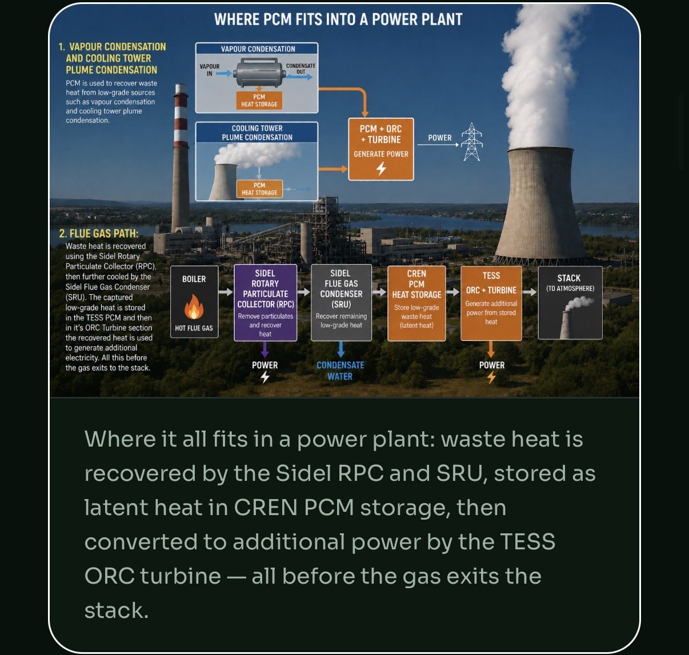

The short answer
On a typical gas-fired industrial boiler, flue gas commonly carries away 15 to 30 percent of the fuel you buy. Older, poorly tuned or high-excess-air units sit at the top of that range. The loss comes in two forms: heat in the hot gas itself, and heat hidden in the water vapour that combustion produces.
Every boiler has losses: radiation from the shell, blowdown, condensate that never comes back. But the stack is almost always the big one, and it is the one plants tend to treat as fixed. It isn't. The temperature of the gas leaving your stack is a direct readout of fuel you paid for and threw away.
Two kinds of heat leave through the stack
1. Sensible heat: the gas is hot
Flue gas typically leaves a boiler 100–150°F hotter than the steam it produced, according to the U.S. Department of Energy. On many plants that means a stack running at 300–450°F or more. All of that temperature above ambient is energy that left the building.
2. Latent heat: the water vapour
This is the part most people miss. Natural gas is mostly methane, and burning methane makes water. The DOE puts it at about 2.25 pounds of water vapour for every pound of methane burned. Put another way, every 1,000 cubic feet of natural gas you burn produces roughly 10 to 12 gallons of water, and it leaves the stack as steam.
Turning that water into vapour took energy, and that energy only comes back if the vapour condenses. In one DOE worked example, a 116 MMBtu/hr natural gas boiler was sending more than 10.6 MMBtu/hr up the stack as latent heat alone. That is about 9 percent of the firing rate, hidden in steam you can't see on a thermometer.

A quick way to estimate your own stack loss
You don't need an energy audit to get a first number. You need three readings and a rule of thumb.
- Stack temperature. Read it at the boiler outlet under normal load.
- Steam or water temperature. If the stack runs more than about 150°F above it, heat transfer surfaces may be fouled or the boiler may be oversized for the load.
- Flue gas oxygen. High excess air means you are heating air you never needed, then throwing it away.
The DOE's rule of thumb: boiler efficiency rises roughly 1 percent for every 40°F drop in flue gas temperature, and roughly 1 percent for every 15 percent reduction in excess air. These are estimates, not guarantees, but they are good enough to tell you whether a deeper look is worth it.
What 1 percent is worth
Here is some illustrative arithmetic. These numbers are made up to show the method. They are not a quote and not from any real site.
| Input | Example value |
|---|---|
| Average firing rate | 20 MMBtu/hr |
| Operating hours | 8,000 per year |
| Gas price | $5.00 per MMBtu |
| Annual fuel spend | $800,000 |
| Value of each 1% efficiency gain | about $8,000 per year |
Drop that example stack from 350°F to 250°F and the rule of thumb gives you roughly 2.5 points, or about $20,000 a year. Go below the water dew point and you start recovering the latent heat too, which is where the bigger numbers live. Run the same math with your own gas price and hours.
Why most boilers stop at 250°F
If the heat is sitting right there, why don't plants just take it? Because of water. A conventional economizer heats boiler feedwater with flue gas, and it is designed to keep the gas above about 250°F. Cool it much further and the water vapour starts to condense. For natural gas that happens at about 135°F. That condensate is mildly acidic, and it eats ordinary carbon-steel stacks and ductwork.
So the standard design leaves the gas hot on purpose. That protects the stack, and it also guarantees the latent heat is never recovered.
What actually recovers it
Getting below the dew point takes a condensing heat exchanger: a unit built from corrosion-resistant materials, with a drain for the condensate, and a cold enough stream of water to pull the heat out. We explain the difference in detail in condensing vs. standard economizers.
The Sidel SRU flue gas condenser is a flue gas condensing heat recovery unit of exactly this type, in industrial use since 1978. It recovers both the sensible and the latent heat, and the condensed water can be collected rather than lost. When the plant can't use all of that heat at the moment it is recovered, Novacab TESS thermal storage holds it until it is needed.
Other losses worth checking while you're there
- Blowdown. Hot water dumped to control dissolved solids. Heat exchangers on blowdown lines are often a quick win.
- Condensate return. Every gallon of hot condensate not returned is a gallon of cold makeup water you have to heat from scratch.
- Shell and piping radiation. Uninsulated valves and flanges add up.
Before you put a number in a budget
Rules of thumb tell you where to look. They don't tell you what you'll save. Sidel CREN starts every project with a data request and a metered baseline, so any savings figure comes from your plant's real numbers. See how we work.
Quick answers
How much heat does an industrial boiler lose up the stack?
On a typical gas-fired industrial boiler, the flue gas commonly carries away somewhere between 15 and 30 percent of the fuel's energy. Part of that is sensible heat in the hot gas and part is latent heat locked in the water vapour formed during combustion.
How much does lowering stack temperature improve boiler efficiency?
The U.S. Department of Energy's rule of thumb is that boiler efficiency rises by roughly 1 percent for every 40 degrees F drop in flue gas temperature. Cooling the gas below its water dew point, about 135 degrees F for natural gas, also recovers latent heat that a conventional economizer cannot reach.
Why don't conventional economizers cool flue gas further?
Conventional economizers usually stop around 250 degrees F because cooling the gas further causes water to condense, and that condensate is corrosive to ordinary carbon-steel stacks and ductwork. Recovering heat below the dew point needs a condensing heat exchanger built from corrosion-resistant materials.